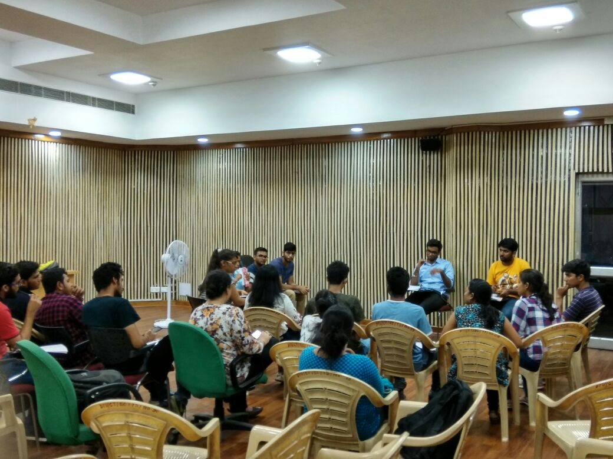
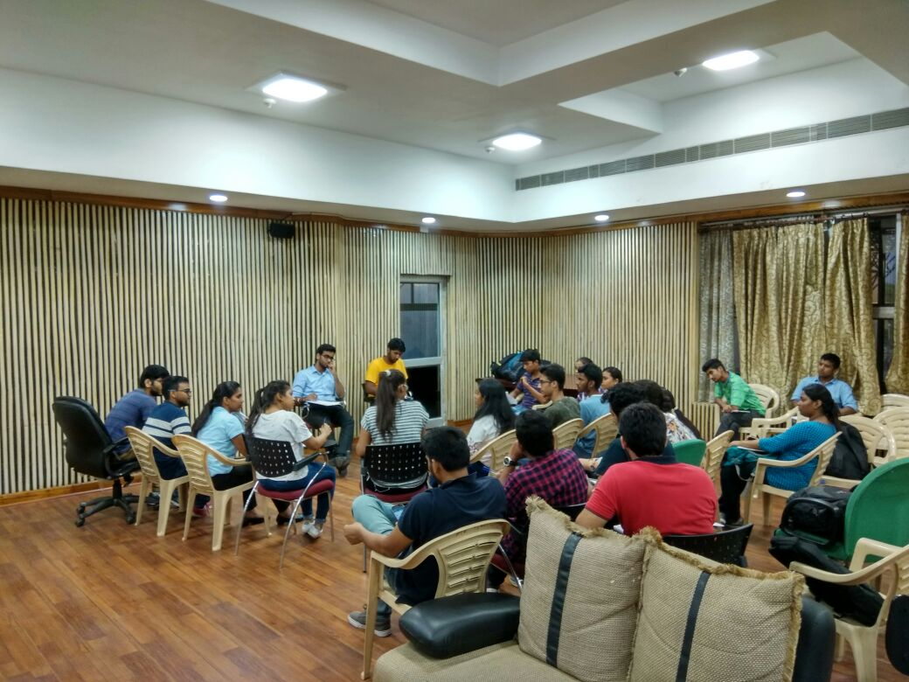
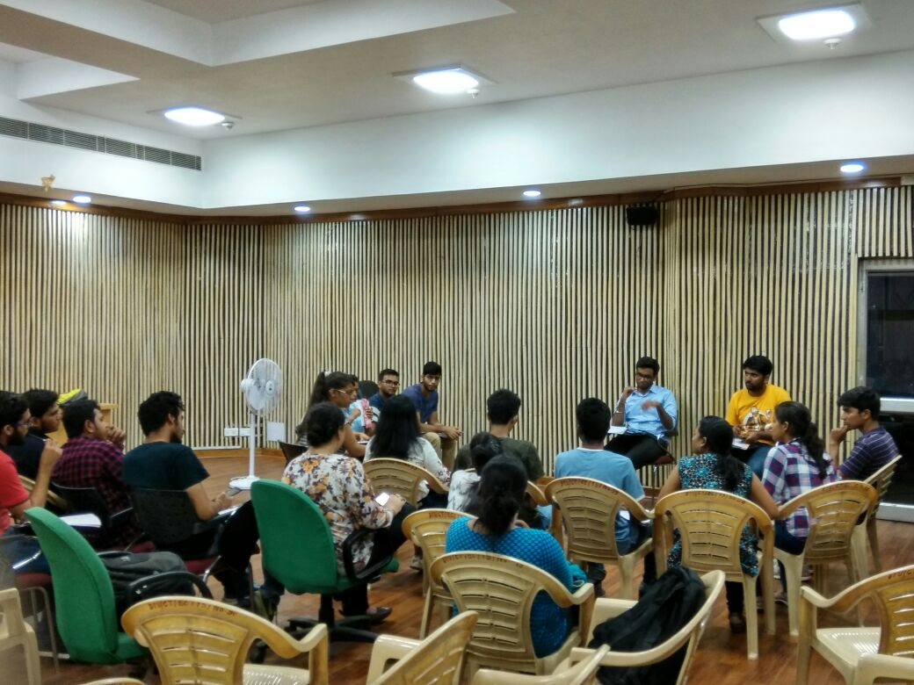
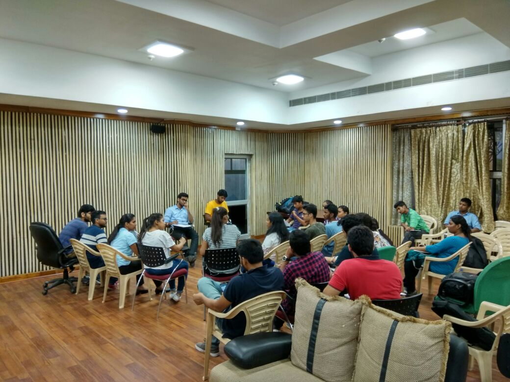
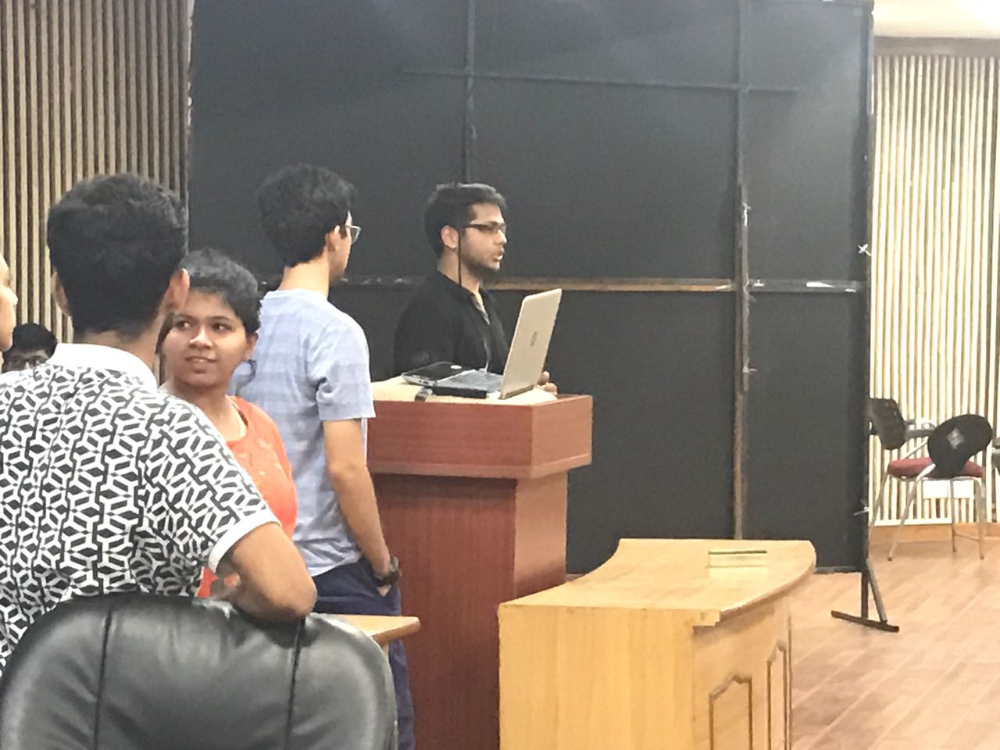
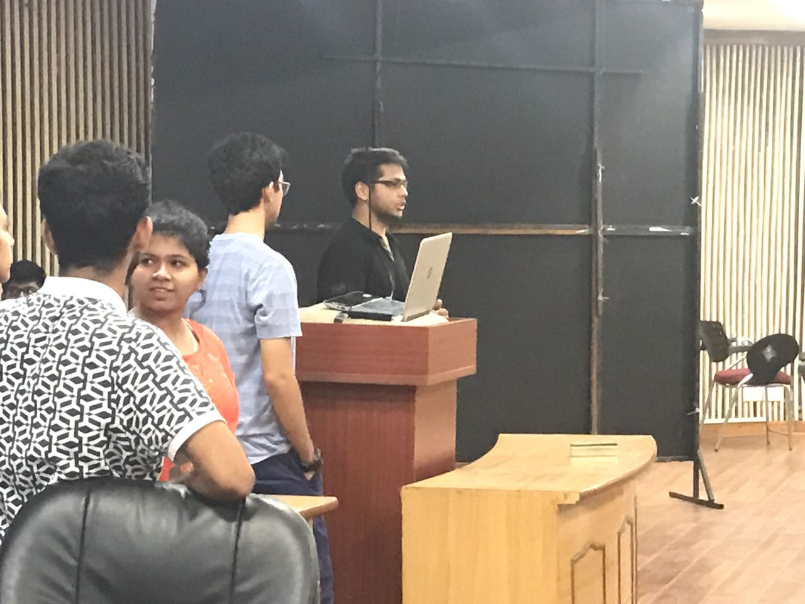
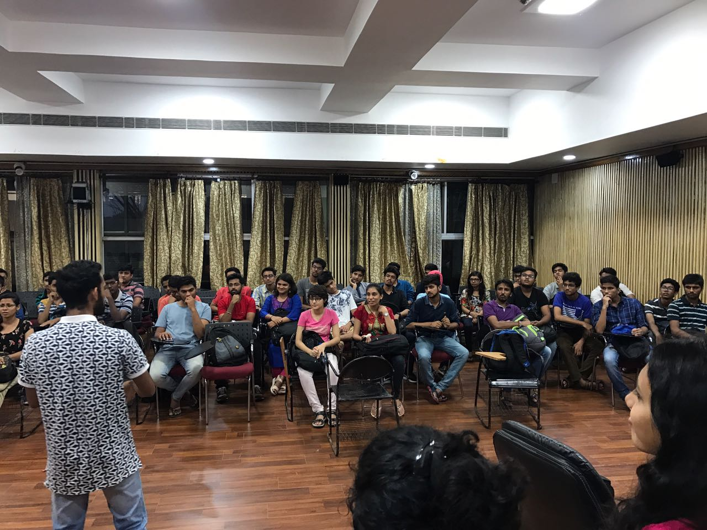
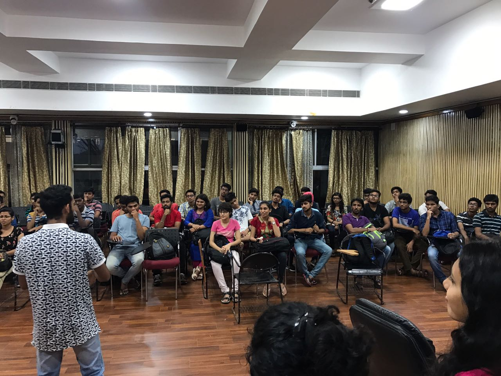

Pre Orientation Graphic Designing
The very first event was a graphic designing workshop which was open for all. Students were taught the basics of graphic designing and photoshop. On 10th August 2017, Round Table DTU organized its first workshop of this session on "Introduction to Graphic Design". The workshop was open to all design enthusiasts in DTU. We covered topics such as the need for a good design, workings of the professional design industry, introduction to photoshop, and a quick tutorial to set the momentum for the beginners. We were exhilarated to instruct such an inquisitive crowd


Pre Orientation Group Discussion
On 16th August 2017, Round Table DTU organized a session on Group Discussions. The GD session, being a pre-orientation event was kept open to all. The participants were briefed on the basic dos and don’ts to be followed in a GD. Two groups were formed out of the participants, with a separate discussion for each group. The moderators provided a dedicated feedback to each of the attendees.
 



Orientation
There was an incredible turnout at Round Table DTU's orientation on 22nd August 2017. To sum it up - Round Table. Skill development. Internships. Projects. Workshops. Web Development. Machine Learning. Coding. Artificial Intelligence. Public Speaking. Group Discussions. Leadership. Fun.
 


 

Recruitment
There was a massive crowd of 362 interested students out of which 136 students became a part of Round Table after the personal interview.
Regular GD sessions
Sessions on Group Discussions where students are divided into groups and given an interesting problem to discuss upon. Each discussion is moderated by Round Table mentors and members are given personal tips to improve their speaking, presenting skills.


Regular Meetups
Engaging discussions about the society's year long plans, department responsibilities.


Workshop on Web Development
Taught students the basics of web development using HTML and CSS. Explained and assisted them to develop their very own website from scratch step by step in the session.


Workshop on Graphic designing
Graphic Designing workshop for students enthusiastic about design, digital art creation.


Workshop on Videography and after effects
Students were taught an introduction to videography, editing, typography in Adobe After Effects.


JAM session
We organised a Just A Minute (JAM) session for the members to boost their confidence in speaking skills and enhance their ability to come up with ideas on the spot.